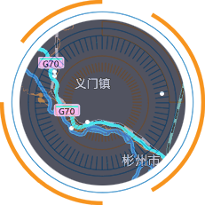

<div>
    <div class="alarm-msg-pannel">暂无重大事故报警</div>
    <div class="alarm-center">
        
        <div class="loading-map">
            <div class="dot map-xzk"></div>
            <div class="dot map-hjh"></div>
            <div class="dot map-dfs"></div>
            <div class="dot map-mck"></div>
            <div class="dot map-wjp"></div>
        </div>
        <div class="radar">
        </div>
        <div>
            <div class="alarm-pannel pannel-wjp">
                <span>文家坡</span>m
                <div class="dot-pannel"></div>
                <div class="line"></div>
            </div>
        </div>

    </div>

</div>

<style>
    * {
        -webkit-box-sizing: inherit;
        box-sizing: inherit;
    }

    div {
        margin: 0;
        display: block;
    }
    /* 报警信息 */
    .alarm-msg-pannel {
        width: 260px;
        height: 40px;
        background: #78787880;
        display: block;
        color: #ede6e6;
        font-size: 14px;
        padding: 5px;
        border-radius: 5px;
        margin-left: 40px;
    }

    /* 报警中心区域 */
    .alarm-center {
        width: 320px;
        height: 400px;
    }

    .alarm-center img {
        position: absolute;
        z-index: -1;
        top: 78px;
        left: 58px;
        width: 210px;
        height: 210px;

    }

    .loading-map {
        border-radius: 50%;
        /*       		background-color: white; */
        /* background-image: url('./images/图片1.png'); */
        background-size: 100%;
        animation-delay: 1s;
        width: 210px;
        height: 210px;
        position: relative;
        top: 20px;
        left: 50px;
    }

    .loading-map .dot {
        /*         cursor: pointer; */
        background: #85ffd2;
        position: relative;
        width: 12px;
        height: 12px;
        border-radius: 50%;
        z-index: 9999;
    }

    .loading-map .dot::before {
        position: absolute;
        content: "";
        width: 100%;
        height: 100%;
        background: inherit;
        border-radius: inherit;
        animation: wave-map 2s ease-out infinite;
        filter: drop-shadow(2px 4px 6px black);
    }

    .map-hjh {
        left: 24%;
        top: 24%;
    }

    .map-hjh::before {
        animation-delay: 0.2s;
    }

    .map-mck {
        left: 24%;
        top: 18%;
    }

    .map-mck::before {
        animation-delay: 0.4s;
    }

    .map-dfs {
        left: 32%;
        top: 49%;
    }

    .map-dfs::before {
        animation-delay: 0.6s;
    }

    .map-xzk {
        left: 40%;
        top: 56%;
    }

    .map-xzk::before {
        animation-delay: 0.8s;
    }

    .map-wjp {
        left: 76%;
        top: 19%;
    }

    .map-wjp::before {
        animation-delay: 1s;
    }


    @keyframes wave-map {

        50%,
        75% {
            transform: scale(3);
        }

        80%,
        100% {
            opacity: 0;
        }
    }

    .radar {
        width: 180px;
        height: 180px;
        border-radius: 50%;
        background-size: 100%;
        background: linear-gradient(#00f7ff1a, #00085a49);
        position: absolute;
        z-index: 999;
        top: 93px;
        left: 73px;
    }

    .radar::before {
        content: "";
        /* z-index: 999; */
        position: absolute;
        width: 90px;
        height: 90px;
        background: linear-gradient(220deg, rgba(0, 0, 0, 0) 50%, #00f6ff 100%);
        border-radius: 24em 0 0 0;
        animation: rotate 10s linear infinite;
        transform-origin: 100% 100%;
    }

    @keyframes rotate {
        from {
            transform: rotate(0deg);
        }

        to {
            transform: rotate(360deg);
        }
    }

    .alarm-pannel {
        animation-delay: 1s;
        width: 110px;
        height: 36px;
        background: rgba(47, 60, 96, 0.8);
        padding: 10px 5px 5px 10px;
        font-size: 14px;
        border-radius: 5px;
        color: #dfdfdf;
        border: solid 1px rgba(255, 255, 255, 0.27)
    }

    .alarm-pannel .dot-pannel {
        position: relative;
        width: 24px;
        height: 12px;
        margin: 0px 0px 0px 10px;
        border-radius: 2px;
        background: #85ffd2;
        display: inline-block;

    }

    .alarm-pannel .dot-pannel::before {
        position: absolute;
        content: "";
        width: 100%;
        height: 100%;
        background: inherit;
        border-radius: inherit;
        animation: wave 2s ease-out infinite;

    }

    @keyframes wave {

        50%,
        75% {
            transform: scale(1.5);
        }

        80%,
        100% {
            opacity: 0;
        }
    }
</style>